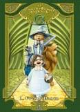
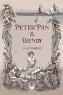
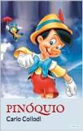

Harry Potter e a Ordem da Fênix

Sinopse
Parece impossível, mas, no bairro mais Muggle do mundo Muggle, Harry é emboscado por Dementors! Para salvar a sua vida e a do primo Dudley, Harry não tem outra hipótese senão usar magia - mesmo sabendo que isso significará a sua expulsão mais que certa de Hogwarts. Enquanto o Ministério da Magia continua a não acreditar que o terrível Senhor das Trevas está de volta, Voldemort e os seus fiéis Devoradores da Morte já começaram a preparar o seu regresso ao poder. Porém, há uma nova esperança: uma antiga ordem secreta, da qual os pais de Harry fizeram parte, voltou a organizar-se e Dumbledore está atento.
Fonte: Google Books.
| Data |
Autor |
Idioma |
Gêneros |
Número de páginas |
Editora |
| 21 de junho de 2013 |
J.K. Rowling |
Inglês |
Romance, Ficção juvenil, Literatura fantástica |
750 |
Pottermore Publishing |
Alice no país das maravilhas

Sinopse
A garota Alice vê um coelho branco entrar em uma toca. Vai atrás dele e chega ao País das Maravilhas. Ela muda de tamanho muitas vezes e conhece criaturas esquisitas, como a Lagarta, a Duquesa, o Gato de Cheshire, a Lebre de Março, o Chapeleiro Maluco e o Rei e a Rainha de Copas. Tradução de Ligia Cademartori para o clássico de Lewis Carroll.
Fonte: Google Books.
| Data |
Autor |
Idioma |
Gêneros |
Número de páginas |
Editora |
| Novembro de 1865 |
Lewis Carroll |
Inglês |
Literatura infantil, Literatura fantástica, Ficção Absurdista, Fantásticotd |
112 |
FTD Educação |
O Maravilhoso Mágico de Oz

Sinopse
Dorothy é uma órfã que vive no interior do Kansas com seus tios. Inesperadamente, um ciclone a leva para uma misteriosa e fantástica terra, um lugar mágico e colorido, cercado por um deserto imenso e governado por um mago poderoso. Em seu caminho, Dorothy enfrenta muitos perigos como bruxas malvadas e monstros gigantes, mas conhece também três amigos incríveis que vão ajudá-la nessa jornada - um Espantalho que deseja um cérebro, um Leão que queria ser corajoso e um Homem de Lata que espera ganhar um coração. Os quatro se unem para encontrar o Mágico de Oz que, segundo dizem, pode realizar todos os seus desejos, e assim Dorothy poderá, finalmente, voltar à casa de seus tios.
Fonte: Google Books.
| Data |
Autor |
Idioma |
Gêneros |
Número de páginas |
Editora |
| 17 de maio de 1900 |
L. Frank Baum |
Inglês |
Literatura infantil, Literatura fantástica |
128 |
Principis |
Peter Pan e Wendy

Sinopse
Em um misto de realidade e fantasia, Peter Pan leva os Irmãos Darling até a Terra do Nunca, um lugar fantástico onde as crianças nunca crescem, onde sereias, fadas, piratas e um crocodilo que faz "tic-toc-tic-toc" habitam. Neste clássico da literatura mundial, J. M. Barrie apresenta o mito do garoto que não queria crescer, e das aventuras e descobertas que ele faz durante sua jornada ao lado de Wendy, ao passo em que aprendem lições para uma vida toda sobre amizade, amor, responsabilidade e empatia.
Fonte: Google Books.
| Data |
Autor |
Idioma |
Gêneros |
Número de páginas |
Editora |
| 27 de dezembro de 1904 |
J. M. Barrie |
Inglês |
Romance, Literatura infantil, Fantasia, Ficção juvenil, Literatura fantástica |
176 |
Amoler |
Pinóquio

Sinopse
A obra As Aventuras de Pinóquio (em italiano Le avventure di Pinocchio. Storia di un burattino) foi escrita pelo italiano Carlo Collodi em Florença no ano de 1881 e publicado dois anos depois com ilustrações de Enrico Mazzanti. Trata-se de um clássico da literatura infanto-juvenil. A história de Pinóquio, e das suas aventuras e desventuras, é riquíssima e permite inúmeras leituras por públicos de diferentes idades. É, por si, uma grande aventura entregar-se a este Pinóquio que erra, sofre e se redime para tornar-se gente.
Traduzida para dezenas de países, Pinóquio faz parte da infância de todos nós pois a história ultrapassou as fronteiras da Itália e se tornou um patrimônio universal.
Fonte: Google Books.
| Data |
Autor |
Idioma |
Gêneros |
Número de páginas |
Editora |
| Fevereiro de 1883 |
Carlo Collodi |
Italiano |
Romance, Literatura infantil, Fantasia, Literatura fantástica, Ficção de aventura |
126 |
Lebooks Editora |